Demonstrate block-based inference in a 2d grid of a noisy image of an X
Based on http://www.cs.ubc.ca/~schmidtm/Software/UGM/block.html PMTKslow
Contents
Get model and data
% This file is from pmtk3.googlecode.com setSeed(0); load X.mat % binary image of an 'X' Xclean = X; X = Xclean + 0.5*randn(size(Xclean)); [nRows, nCols] = size(Xclean); figure; imagesc(Xclean); colormap('gray'); title('clean'); figure; imagesc(X); colormap('gray'); title('noisy'); blocks = mrf2ImgMkTwoBlocks(nRows, nCols);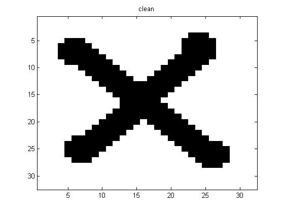 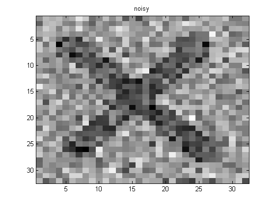
MAP estimation
methods = {};
methodArgs = {};
methods{end+1} = 'ICM';
methodArgs{end+1} = {'nRestarts', 1};
methods{end+1} = 'Block_ICM';
methodArgs{end+1} = {'blocks', blocks};
for i=1:length(methods)
method = methods{i};
args = methodArgs{i};
[model] = mrf2MkLatticeX(X, method, args);
zhat = mrf2Map(model);
energy = mrf2Energy(model, zhat);
figure; imagesc(reshape(zhat,nRows,nCols));
colormap gray;
title(sprintf('MAP estimate using %s, E=%5.3f', method, energy));
printPmtkFigure(sprintf('mrfImgEst%s', method))
end
Block Improvement! Block Improvement! Block Improvement!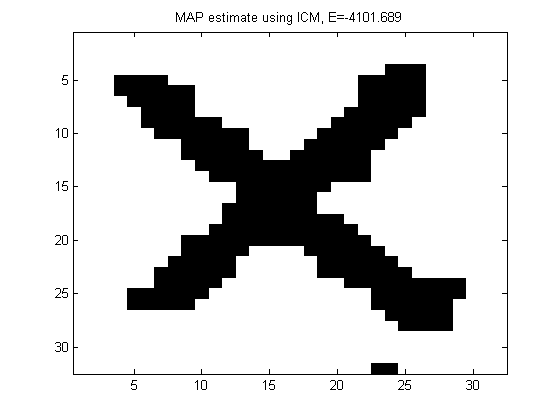 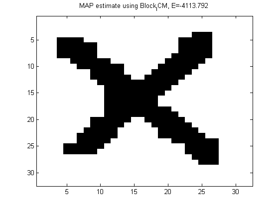
Inference
methods = {};
methodArgs = {};
methods{end+1} = 'MeanField';
methodArgs{end+1} = {'maxIter', 100};
methods{end+1} = 'Block_MF';
methodArgs{end+1} = {'blocks', blocks, 'maxIter', 100};
methods{end+1} = 'Gibbs';
methodArgs{end+1} = {'burnIn', 100, 'nSamples', 100};
methods{end+1} = 'Block_Gibbs'; % slow
methodArgs{end+1} = {'blocks', blocks, 'burnIn', 10, 'nSamples', 10};
for i=1:length(methods)
method = methods{i};
args = methodArgs{i};
[model] = mrf2MkLatticeX(X, method, args);
[nodeBel] = mrf2InferNodesAndEdges(model);
p1 = nodeBel(:,2);
figure; imagesc(reshape(p1,nRows,nCols)); colormap gray;
title(sprintf('mean of marginals using %s', method));
printPmtkFigure(sprintf('mrfImgMeanOfMarginals%s', method))
[junk zhat] = max(nodeBel,[],2);
figure; imagesc(reshape(zhat,nRows,nCols)); colormap gray;
title(sprintf('max of marginals using %s', method));
printPmtkFigure(sprintf('mrfImgMaxOfMarginals%s', method))
end
Iter = 1 of 100, change = 415.550221 Iter = 2 of 100, change = 22.007279 Iter = 3 of 100, change = 6.005222 Iter = 4 of 100, change = 2.610466 Iter = 5 of 100, change = 1.021567 Iter = 6 of 100, change = 0.563337 Iter = 7 of 100, change = 0.471048 Iter = 8 of 100, change = 0.526145 Iter = 9 of 100, change = 0.686439 Iter = 10 of 100, change = 0.911439 Iter = 11 of 100, change = 1.003802 Iter = 12 of 100, change = 0.711492 Iter = 13 of 100, change = 0.295686 Iter = 14 of 100, change = 0.090059 Iter = 15 of 100, change = 0.025837 Iter = 16 of 100, change = 0.008185 Iter = 17 of 100, change = 0.003262 Iter = 18 of 100, change = 0.001716 Iter = 19 of 100, change = 0.001103 Iter = 20 of 100, change = 0.000782 Iter = 21 of 100, change = 0.000577 Iter = 22 of 100, change = 0.000432 Iter = 23 of 100, change = 0.000325 Iter = 24 of 100, change = 0.000245 Iter = 25 of 100, change = 0.000185 Iter = 26 of 100, change = 0.000140 Iter = 27 of 100, change = 0.000106 Iter = 28 of 100, change = 0.000080 Generating burnIn sample 1 of 10 Generating burnIn sample 2 of 10 Generating burnIn sample 3 of 10 Generating burnIn sample 4 of 10 Generating burnIn sample 5 of 10 Generating burnIn sample 6 of 10 Generating burnIn sample 7 of 10 Generating burnIn sample 8 of 10 Generating burnIn sample 9 of 10 Generating burnIn sample 10 of 10 Generating sample 1 of 10 Generating sample 2 of 10 Generating sample 3 of 10 Generating sample 4 of 10 Generating sample 5 of 10 Generating sample 6 of 10 Generating sample 7 of 10 Generating sample 8 of 10 Generating sample 9 of 10 Generating sample 10 of 10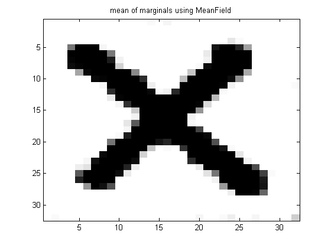 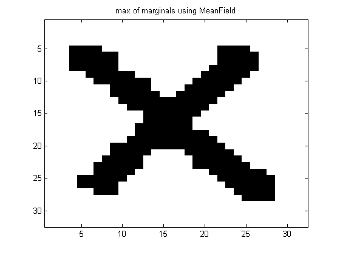 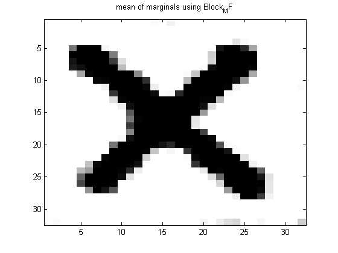 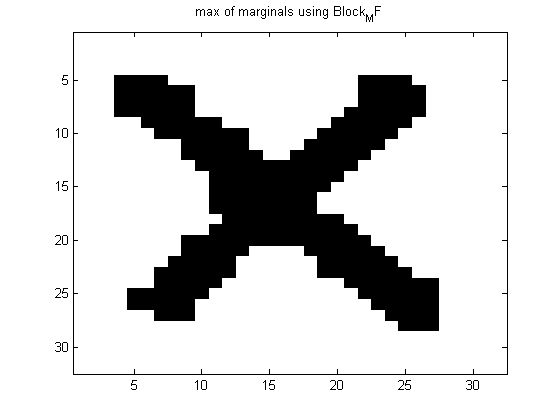 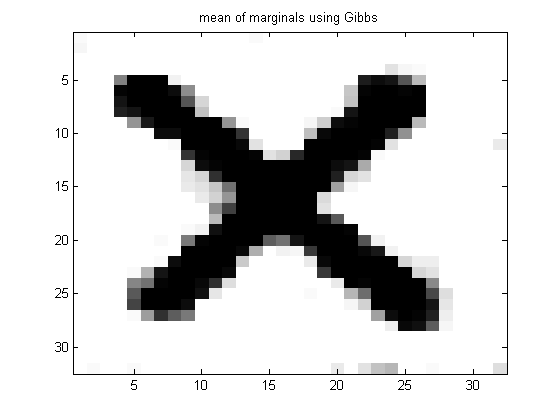 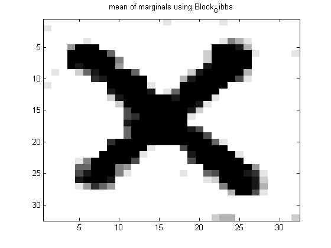 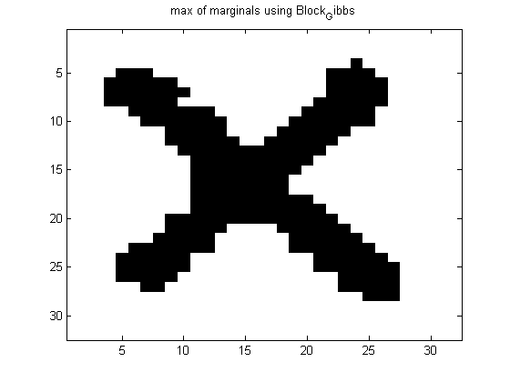